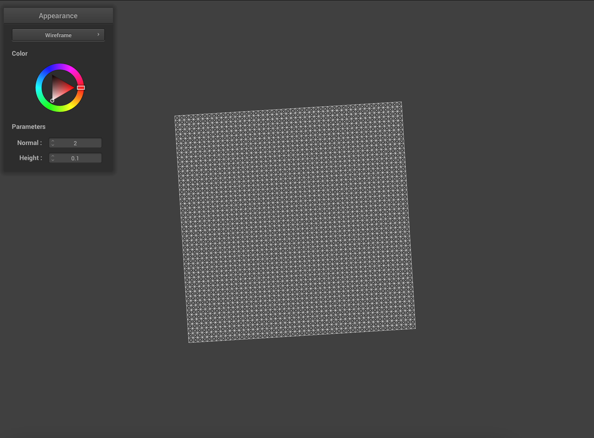
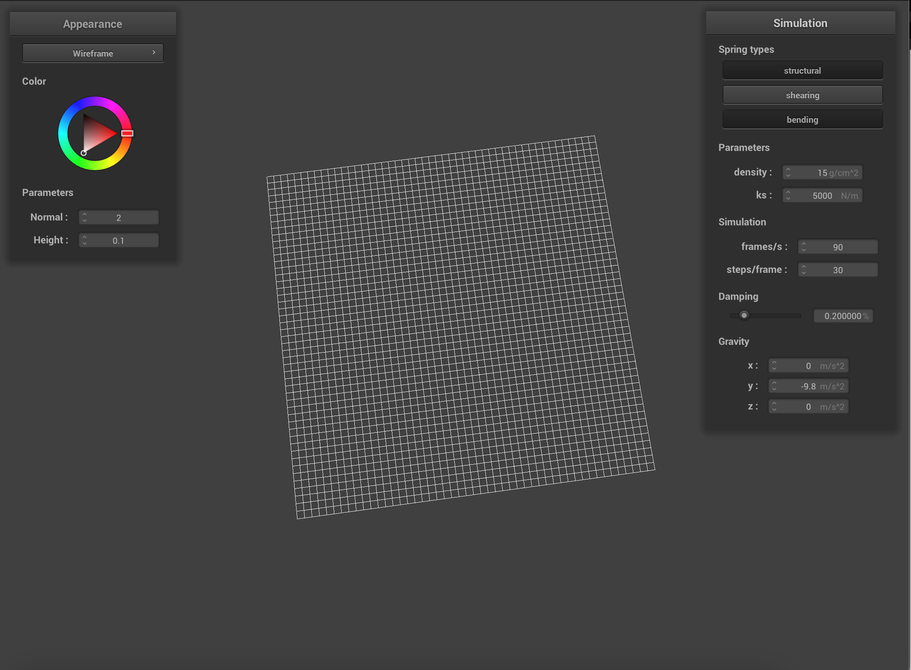
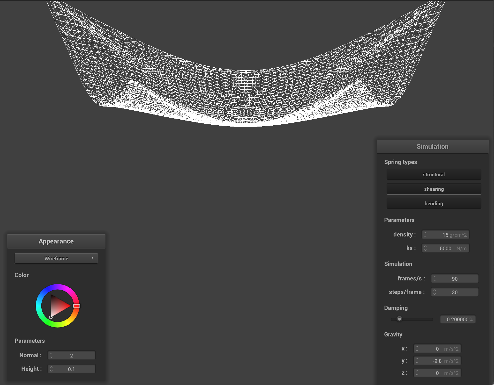
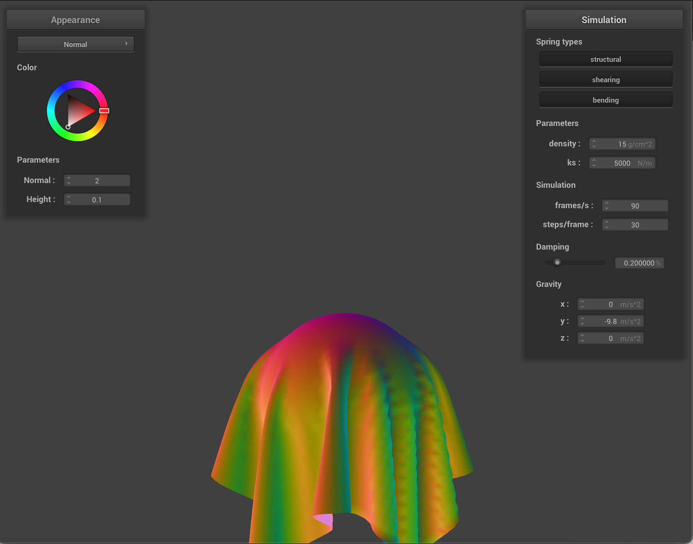
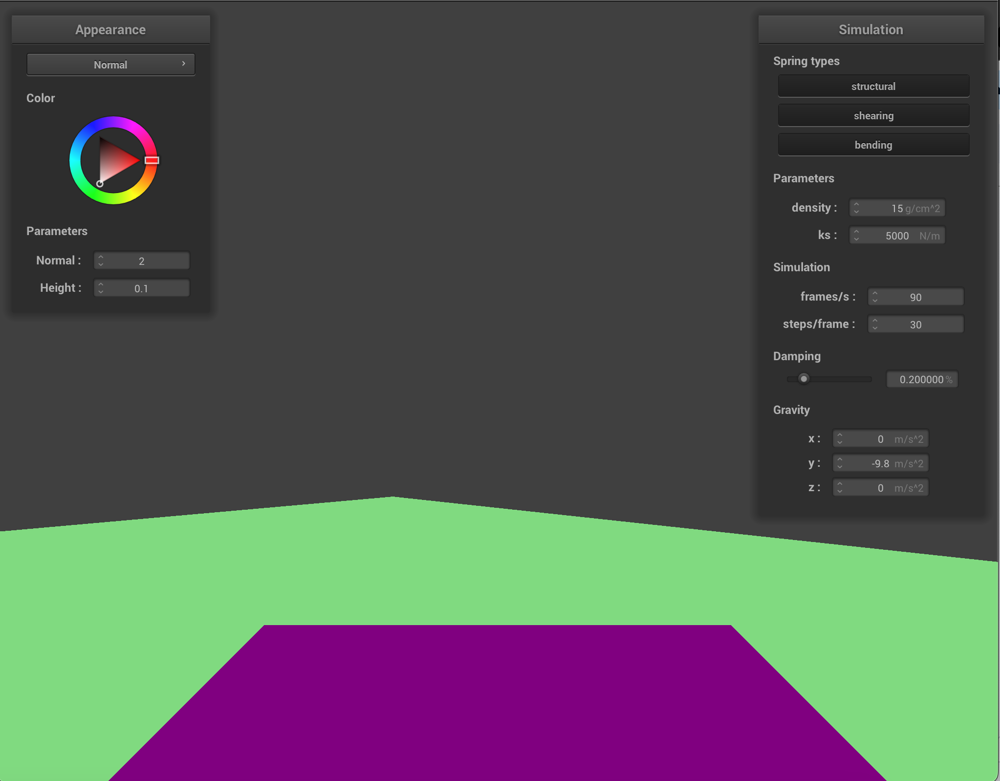
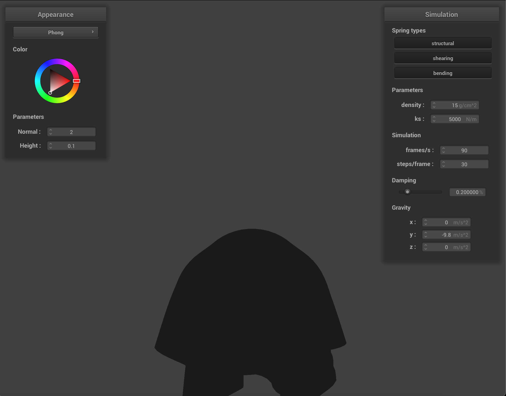

Overview
In this project, I coded various aspects of cloth simulation: different constraints to the cloth's structure; varying the spring constant, density, and damping; and implementing shading and texture mapping techniques. For realistic rendering, I implemented shader programming which uses vertex and fragment shaders to achieve dynamic lighting and material effects. I also implemented the Blinn-Phong shading model to illustrate the interaction of light with surfaces. Finally, I experimented cloth interaction different rendering techniques for new textures and patterns. I most enjoyed implementing the mirror effect with the cube environment map because I thought it looked the most visually impressive.
Part 1
Take some screenshots of scene/pinned2.json from a viewing angle where you can clearly see the cloth wireframe to show the structure of your point masses and springs.
Show us what the wireframe looks like (1) without any shearing constraints, (2) with only shearing constraints, and (3) with all constraints.
Part 2
Describe the effects of changing the spring constant ks; how does the cloth behave from start to rest with a very low ks? A high ks?
With a very low ks, the cloth has much finer wrinkles and folds of fabric. This is most noticeable at the top near the two pinned points where there are many more U curves of fabric bunched closely together. Additionally, when interacting with the fabric the fabric is much more reactive and “jumps” a lot more.

With a high ks, the cloth is much more stiff. There is only one noticable U curve of fabric near the top that goes between the two pinned points. The rest of the grid is almost entirely non-reactive to interactions.

What about for density?
With lower densities, the curve of fabric at the top doesn’t hang quite as loose. If the density is set to 1, the fabric is nearly a complete square with only a slight dip in the fabric at the top.

With higher densities, the fabric hangs down much more loosely.

What about for damping?
With lower damping, the fabric falls down very swiftly and swings around a lot.

With higher damping, the fabric falls down much more slowly and stays still once it flattens out.

Show us a screenshot of your shaded cloth from scene/pinned4.json in its final resting state! If you choose to use different parameters than the default ones, please list them.
Part 3
Show us screenshots of your shaded cloth from scene/sphere.json in its final resting state on the sphere using the default ks = 5000 as well as with ks = 500 and ks = 50000. Describe the differences in the results.
With a lower ks, the fabric is more stiff and has more structure. It juts outwards in a triangle at the top of the ball instead of laying flat and smooth. With higher ks, the fabric falls more loosely with less structure.
Show us a screenshot of your shaded cloth lying peacefully at rest on the plane. If you haven't by now, feel free to express your colorful creativity with the cloth! (You will need to complete the shaders portion first to show custom colors.)
Part 4
Show us at least 3 screenshots that document how your cloth falls and folds on itself, starting with an early, initial self-collision and ending with the cloth at a more restful state (even if it is still slightly bouncy on the ground).


Vary the density as well as ks and describe with words and screenshots how they affect the behavior of the cloth as it falls on itself.
With high density, the cloth falls directly vertically and crinkles at the bottom. The wrinkles are very fine and the cloth keeps moving in a narrow roll of fabric after falling.


In contrast with low density, the fabric has much larger and voluminous folds. After falling onto the plane, the fabric keeps on unrolling into a flat piece of fabric with only


With low ks, the effect is similar to high density. The fabric has much more wrinkles and folds into itself into a roll on the plane before unrolling to flatten out a bit.


With high ks, the effect is similar to low density. The folds are much larger and then fabric is not as wrinkled. After a long time the fabric flattens out completely onto the plane.


Part 5
Explain in your own words what is a shader program and how vertex and fragment shaders work together to create lighting and material effects.
A shader program creates dynamic lighting and material effects for 3D models and scenes. The two shaders that work together are vertex shaders and fragment shaders. The vertex shader determines where vertices should be placed in a scene by considering the position of the camera, the shape of the object, and how it should move or rotate. After the vertex shader has arranged all the points, the fragment shader determines the color of each pixel in the scene by considering the lighting of the scene and the material properties of the object.
Explain the Blinn-Phong shading model in your own words. Show a screenshot of your Blinn-Phong shader outputting only the ambient component, a screen shot only outputting the diffuse component, a screen shot only outputting the specular component, and one using the entire Blinn-Phong model.
The Blinn-Phong shading model is a way to make 3D computer graphics look more realistic by simulating the way light interacts with surfaces. It mathematiclaly simulates three types of light interactions on a surface – specular highlight, diffuse reflection, and ambient light. Adjusting the model parameters can make the surface appear smoother or rougher, shinier, or modify the overall shade of the object.
Show a screenshot of your texture mapping shader using your own custom texture by modifying the textures in /textures/.

Show a screenshot of bump mapping on the cloth and on the sphere. Show a screenshot of displacement mapping on the sphere. Use the same texture for both renders. You can either provide your own texture or use one of the ones in the textures directory, BUT choose one that's not the default texture_2.png. Compare the two approaches and resulting renders in your own words. Compare how your the two shaders react to the sphere by changing the sphere mesh's coarseness by using -o 16 -a 16 and then -o 128 -a 128.
Displacement mapping creates a more detailed representation of surface textures than bump mapping. The difference in coarseness is especially clear with the high quality renderings (-o 128 -a 128). Bump mapping is more coarse because it simulates texture details by manipulating the surface's normal during the lighting calculation, creating an illusion of depth. On the other hand, displacement mapping actually alters the model's geometry by displacing vertices to create real geometric changes.
Default test commands


-f ../scene/sphere.json -o 16 -a 16


-f ../scene/sphere.json -o 128 -a 128